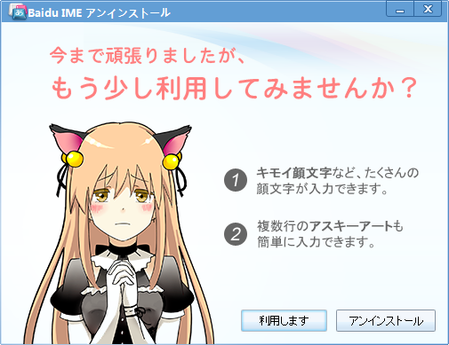
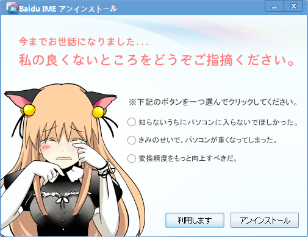

Baidu IME for Windows 8 をアンインストールした
公開日：

やめろ！ やめろ！ URL

これは卑怯だ URL
まさかソフトに泣き落としされる時代がこようとは……
“バイドゥ”という名前だけで兎角厳しめに評価されがちな「Baidu IME」*1だけど、登場当時よりはだいぶよくなったと思う。「Google 日本語入力」の二番煎じと決めつける人もいるが、登場時期と開発にかかる時間を冷静に比べれば決してそんなハズもなく、それぞれ独自なプロジェクトだ。常用するかと言われれば正直なところ微妙だけど*2、スキン機能なんかは気に入る人も多いのではないかな。
……べ、別に泣き落としに負けて擁護しているんじゃないんだからねっ！ 健全な競争のためにはカウンターパートが必要ということだよ。